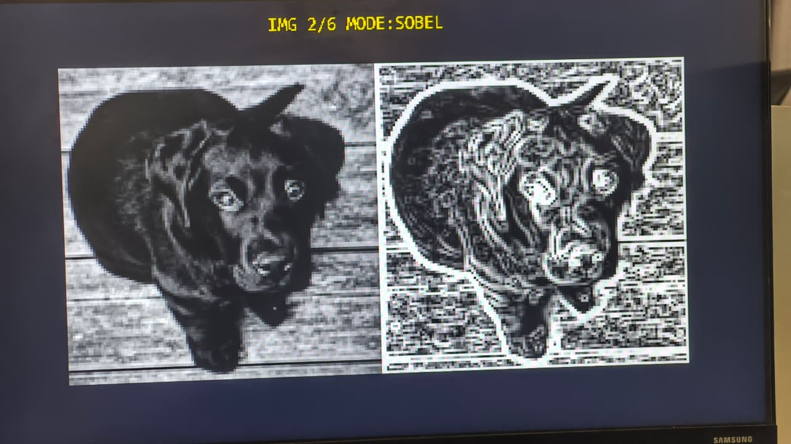
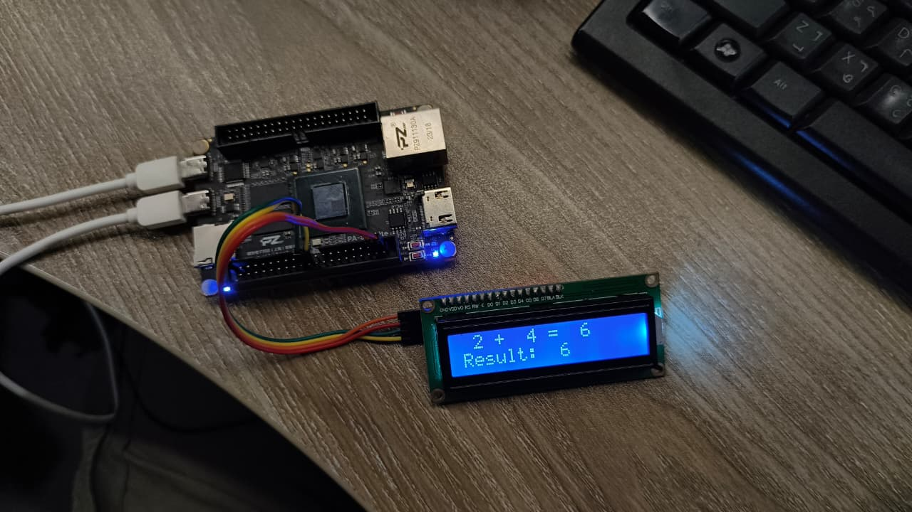

Neural Accelerators on FPGA
Overview
Reconfigurable computing sits in a useful gap. ASICs give peak efficiency but commit silicon to one workload; CPUs and GPUs are flexible but pay in joules per inference. FPGAs let you trade between the two, re-fabricating the datapath to match the model in front of you.
The work here is about how to actually close that gap in practice: choosing the right compute primitive (LUT, log-domain, approximate), wrapping it in a clean AXI4 SoC, and pushing it through Vivado without losing timing.
Active Projects
MOSAIC
Multimodal edge-AI SoC: a RISC-V host and a layer-partitioned ternary / int4 accelerator that detects coughs from audio and motion.
- 9.73 ms per inference on 9 hardware multipliers.
- All weights (90 KiB) in on-chip ROM; no DRAM.
- Bit-exact to the reference model across six checks.

SQA-Arc
Fisher-guided assignment of each layer to a ternary engine or a 4-bit engine, built as SQA-Core: a fixed-function FPGA overlay that runs ten networks from one bitstream.
- 100 MHz in 20,845 LUTs (15.58% of an XC7A200T).
- No DSP block computes a weight-activation product.
- EfficientNet-B0 running on the board with an HDMI dashboard.
Hybrid Neural Accelerator
Reconfigurable LUT / logarithmic compute engine for edge-AI inference, featuring a mode-switching INT8, LNS, and INT4 datapath prototyped on Artix-7 XC7A200T.
- −75% DSP usage vs. standard INT8 baseline.
- Timing met at the 200 MHz target (WNS +0.42 ns); Fmax 225 MHz.
- Accepted at GLSVLSI 2026 Late Breaking Session (not presented).

Sobel Video Co-Processor
Real-time 3×3 convolution video filter (Sobel, sharpen, blur, emboss, threshold) built in Vitis HLS and dropped into a flat-Verilog 720p HDMI pipeline, shown live as a split-screen RAW │ FILTERED view.
- II=1 line-buffer streaming kernel: one pixel in / one pixel out per clock.
- Shift-add operators only, so 0 DSP slices, 2 BRAMs, and ~1% of the fabric.
- Timing closed with margin; ~0.44 W on-chip, no soft-CPU and no AXI.

CNN Digit Detector
Full PyTorch-to-FPGA pipeline that trains a 2D CNN on an 8×8 digits dataset, exports fixed-point weights, synthesises via Vitis HLS, and displays live digit recognition over HDMI.
- Conv–ReLU–MaxPool–FC pipeline at II=1, 200 MHz.
- ap_fixed<16,6> arithmetic; weights baked as ROM constants.
- Live HDMI display with per-class logit bar chart.

Interactive FPGA Adder
Interactive 4-bit accumulator implemented in Verilog HDL on the PA200T-StarLite board, featuring debounced button control, a custom dynamic I2C LCD driver, and real-time UART logging.
- Three-state accumulator FSM (Num1 Entry, Num2 Entry, and Result calculation).
- Custom Verilog I2C master controller driving a 16×2 character LCD screen.
- UART telemetry interface log outputs to PuTTY console at 115200 baud.
Toolchain
| AMD Vivado Suite | End-to-end FPGA design covering RTL, synthesis, implementation, and timing closure. |
| Vitis HLS | High-level synthesis from C/C++ to optimised RTL. |
| Artix-7 XC7A200T | Target silicon with 134,600 LUTs, 740 DSP slices, and 13 Mb BRAM (365 BRAM36 tiles). |